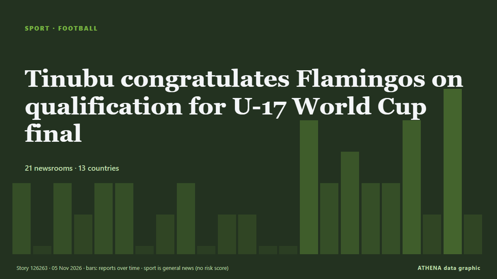

الرياضة
برعايةبرعاية  Cybernetics and Artificial Intelligence Lab Welcome to the Cybernetics and Artificial Intelligence Laboratory, established at the Department of Business Administration of the National and Kapodistrian University of Athens. The lab is headed by Professor Dimitrios Thomakos. The lab aims to do research that can be published in top venues. Our research uses tools and methods of Artificial Intelligence, and lies in the following areas: - Forecasting - Decision making - Cyber security - Finance We are always looking forward to collaborating with exceptional students!
Cybernetics and Artificial Intelligence Lab Welcome to the Cybernetics and Artificial Intelligence Laboratory, established at the Department of Business Administration of the National and Kapodistrian University of Athens. The lab is headed by Professor Dimitrios Thomakos. The lab aims to do research that can be published in top venues. Our research uses tools and methods of Artificial Intelligence, and lies in the following areas: - Forecasting - Decision making - Cyber security - Finance We are always looking forward to collaborating with exceptional students!
تُعرض العناوين بالإنجليزية كما نُشرت.

كرة القدمTinubu congratulates Flamingos on qualification for U-17 World Cup final
He urged the players to sustain their impressive form and remain committed to the task ahead as they pursue the ultimate prize. من Channels TV
| 24 أكتوبر | 9 |
|---|---|
| 25 أكتوبر | 32 |
| 26 أكتوبر | 45 |
| 27 أكتوبر | 64 |
| 28 أكتوبر | 62 |
| 29 أكتوبر | 72 |
| 30 أكتوبر | 103 |
| 31 أكتوبر | 74 |
| 1 نوفمبر | 80 |
| 2 نوفمبر | 113 |
| 3 نوفمبر | 113 |
| 4 نوفمبر | 85 |
| 5 نوفمبر | 69 |
| 6 نوفمبر | 9 |
FIFA visits Portugal as preparations for 2030 World Cup continue
A FIFA delegation is in Portugal this week to review preparations for the 2030 World Cup, which the country will co-host with Spain and Morocco. من The Portugal News
LIV Golf to wind down
LIV Golf has confirmed it plans to wind down operations and enter the liquidation phase, instead of launching a new version, because of a lack of financial support. من Sky Sports
Mass brawl sparks record 53 red cards in Brazilian under-20s match
The referee sent off 43 players, eight coaching staff and two board members after goal celebrations and taunting descended into complete chaos. من Free Malaysia Today
Victor Wembanyama scores career-high 52 points and 24 rebounds in Spurs win
French basketball star Victor Wembanyama delivered a remarkable performance against the Dallas Mavericks in an NBA regular-season game, setting two new career records. من AzerNews
Australian T20 star Chris Lynn banned for cocaine use
Chris Lynn confirmed he had used cocaine “during a period of several hours across the evening of 15 July 2026 and into the early hours of 16 July 2026”. من Stuff
Japan FA honorary president Tashima to challenge Infantino for FIFA presidency
Tashima says he brings ‘honest, sound, upright attitude’ He is understood to have acted with the blessing of Uefa The Japan Football Association’s honorary president, Kozo Tashima, has announced his… من Guardian Business
WTA takes blame after Pegula comments on Andreeva get livestreamed
WASHINGTON: The Women’s Tennis Association (WTA) on Thursday said it takes “full responsibility” for failing to inform players about active microphones on practice courts after private comments by… من Arab News
Spain’s coach among mourners bidding farewell to De Miguel
Jesus De Miguel, 30, died following a collision with Andorra goalkeeper Jesus Owono during a second-division match on Monday. من Free Malaysia Today
Ballon d’Or winner Harry Kane signs contract extension at Bayern Munich until 2029
The England captain is nearing the end of the four-year contract he agreed after leaving Tottenham in summer 2023. من The Irish News (Belfast)
Arsenal edge stubborn Slavia in Champions League
The Premier League champions were quick to take control of the game, with Noni Madueke and Viktor Gyokeres scoring in the first half to secure a 2-1 win. من Free Malaysia Today
I will not be silenced – Lewis Hamilton stands by Charles Leclerc criticism
Hamilton was furious with his Ferrari team-mate at last weekend’s Mexican Grand Prix. من The Irish News (Belfast)
Australian F1 world champion Alan Jones dies aged 80
Alan Jones, who was the second Australian and first Williams driver to win the Formula One world title, died on Thursday a few days after his 80th birthday. من Cyprus Mail
Putin says countries resisting Russia's return to world sport are violating democratic bodies
President Vladimir Putin said on Thursday that countries opposing rulings to allow Russia to take part in international sport are violating the rights of both Russian athletes and democratic… من Deccan Herald
Tributes pour in for Tenerife striker Jesus de Miguel as Raphinha sends “message of strength” to family
Gunners paid their respects at their training ground hours after Spaniard’s tragic death. من Evening Standard (London)
Nadal set to join Real Madrid board of directors
Tennis great Rafael Nadal is set to join the board of Spanish football giants Real Madrid. من BBC News
Haaland breaks City out of mini-rut at Leipzig
LEIPZIG, Germany: Erling Haaland’s 78th-minute strike helped Manchester City shake off a mini-slump with a 3-2 Champions League win at RB Leipzig on Wednesday. من Arab News
Tennis player Burrage receives death threats, abuse on social media after Chennai Open exit
Burrage shared a recording of a lengthy reel of abusive messages she received on Instagram following a loss to Vaishnavi Adkar in the round of 32 at the Chennai Open. من Sportstar
Como equal Champions League record with stunning 9-1 win at Lens
Como stormed into the Champions League record books with a stunning 9-1 demolition of Lens on Wednesday, equalling the biggest victory in the competition’s history. من Cyprus Mail
Djokovic battles through Paris Masters opener
The victory over Valentin Vacherot kept alive the Serbian 24-time Grand Slam champion's chances of landing a spot in the season-ending ATP Finals. من Free Malaysia Today
West Ham name Scott Parker head coach
LONDON: West Ham announced on Tuesday that they had sacked head coach Nuno Esprito Santo after a disappointing start to the Championship season. من New Straits Times
Ballon d'Or winner Kane signs Bayern extension until 2029
Bayern Munich striker Harry Kane has beaten Barcelona youngster Lamine Yamal and Real Madrid forward Kylian Mbappé to emerge as the best player of the 2025-2026 season in Spanish newspaper Marca's… من Vanguard
Virat Kohli breaks Sachin Tendulkar's ODI record as India beat New Zealand
Words are not enough to describe Virat Kohli's greatness. من Gulf News
Arsenal injury update: Ezri Konsa, William Saliba, Bukayo Saka latest return dates
William Saliba’s return to fitness may have come at the perfect time for Arsenal. من Evening Standard (London)
Rybakina, Gauff drawn together at WTA Finals, Sabalenka faces Andreeva
World number one Elena Rybakina and American Coco Gauff were drawn in Group One for the WTA Finals, while second-ranked Aryna Sabalenka will face third-ranked Mirra Andreeva in Group Two at the… من Business Recorder
Valverde late strike seals Real Madrid 3-2 win at AEK
Real Madrid came from behind to beat AEK Athens 3-2 in the Champions League on Wednesday, with Federico Valverde scoring in stoppage time to complete a late victory. من Cyprus Mail
Fenerbahce 3 Liverpool 2 LIVE - Andoni Iraola and Kostas Tsimikas react as Reds suffer first Champions League loss
Live coverage of Liverpool's Champions League clash against Fenerbahce at the Chobani Stadium as they look to make it four league phase wins from four. من Liverpool Echo
Real Madrid confident of signing Man Utd's Gabriel
Real Madrid have reached a verbal agreement with 16-year-old JJ Gabriel over a potential move to the Santiago Bernabeu. من Sky Sports
Djokovic keeps alive bid to squeeze into ATP Finals
Novak Djokovic kept alive his last-ditch bid to qualify for this year's ATP Finals by grinding out a first-round victory over Valentin Vacerot at the Paris Masters. من MyJoyOnline
New Mexico's Deb Haaland on making history as first Native American woman elected governor
The election led to several historic firsts. من PBS NewsHour
Erling Haaland is Manchester City’s hero again in entertaining win in Leipzig
Haaland scored his 14th goal of the season to down RB Leipzig. من The Irish News (Belfast)
McIlroy backs claims LIV wanted to 'destroy' DP World Tour
Rory McIlroy backs DP World Tour CEO Guy Kinnings' comments saying that LIV Golf started with the intention of 'destroying' the former, as he welcomes a reset in men's golf. من Sky Sports
Bayern skeleton crew sink Atletico in Champions League
MADRID: Bayern Munich overcame a horror list of absences to cruise to a 2-0 win away at Atletico Madrid in the Champions League on Tuesday. من Arab News
Cold Play: Nations Line Up To Boycott Ice Hockey Games Against Russia
A growing list of countries are lining up against a court decision allowing Russia to rejoin international ice hockey events, saying they will boycott any team Moscow sends, putting the World… من RFE/RL (English)
India vs Pakistan in Men’s ODI World Cup 2027 attract nearly 84 lakh ticket applications
India and Pakistan will face off on October 10 at Johannesburg’s Wanderers stadium in South Africa — a venue that has a capacity of just 34,000 spectators. من Sportstar